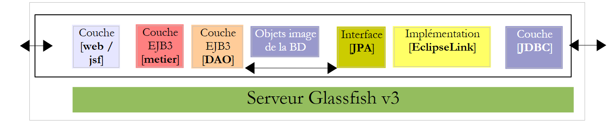
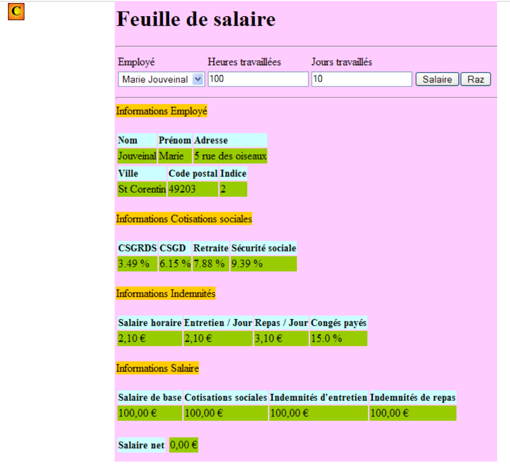
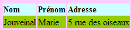
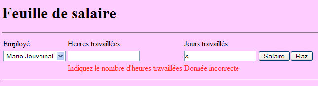

10. Version 5 - PAM Web Application / JSF
10.1. Application Architecture
The architecture of the PAM web application will be as follows:
 |
In this version, the Glassfish server will host all application layers:
- the [web] layer is hosted by the server’s servlet container (1 below)
- the other [metier, DAO, jpa] layers are hosted by the server’s EJB3 container (2 below)
 |
The [metier, DAO] components of the application running in the EJB3 container were already described in the client/server application discussed in Section 7.1, which had the following architecture:
 |
The [metier, DAO] layers ran in the EJB3 container on the Glassfish server, and the [ui] layer ran in a console or Swing application on another machine:
 |
In the architecture of the new application:
 |
only the [web / jsf] layer needs to be written. The other [metier, DAO, jpa] layers are predefined.
In document [ref3], it is shown that a web application where the web layer is implemented with Java Server Faces has an architecture similar to the following:
 |
This architecture implements the MVC Design Pattern (Model, View, Controller). The processing of a client request proceeds as follows:
If the request is made using a GET, the following two steps are executed:
- request - the client browser sends a request to the [Faces Servlet] controller. This controller handles all requests from the clients components. It is the entry point of the application. It is the C in MVC.
- response - the C controller instructs the selected JSF page to display itself. This is the view, the V in MVC. The JSF page uses an M template to initialize the dynamic parts of the response it must send to the client. This template is a Java class that can call upon the [métier] and [4a] layers to provide the V view with the data it needs.
If the request is made with a POST, two additional steps occur between the request and the response:
- request - the browser client makes a request to the [Faces Servlet] controller.
- processing - the C controller processes this request. This is because a POST request is accompanied by data that must be processed. To do this, the controller is assisted by event handlers specific to the written application [2a]. These handlers may require the business layer [2b]. The event handler may need to update certain M models [2c]. Once the client request has been processed, it may trigger various responses. A classic example is:
- an error page if the request could not be processed correctly
- a confirmation page otherwise
The event handler returns a result of type string, called the key of navigation, to the controller [Faces Servlet].
- navigation - the controller selects the page JSF (= view) to send to the client. This selection is based on the navigation key returned by the event handler.
- response - the selected page JSF will send the response to the client. It uses its M template to initialize its dynamic parts. This template can also call upon the [métier] [4a] layer to provide the JSF page with the data it needs.
In a JSF project:
- the C controller is the [javax.faces.webapp.FacesServlet] servlet. This is found in the [jsf-api.jar] library.
- The V views are implemented by JSF pages.
- The M models and event handlers are implemented by Java classes often called "backing beans".
- In version and JSF 1.x, the definition of the beans as well as the rules for transitioning from one page to another are defined in the [faces-config.xml] file. It contains the list of views and the rules for transitioning from one to another. Starting with version 2, bean definitions can be made using annotations, and transitions between pages can be hard-coded directly in the bean code.
10.2. How the Application Works
When the application is accessed for the first time, the following page appears:
 |
You then fill out the form and request the salary:
 |
The following result is obtained:
 |
This version calculates a fictitious salary. Do not pay attention to the page’s content, but rather to its formatting. When you click the [Raz] button, you return to the [A] page.
Incorrect entries are flagged, as shown in the following example:
 |
10.3. The Netbeans project
We will build an initial version for the application where the [métier] layer will be simulated. We will have the following architecture:
 |
When event handlers or models request data from the [métier] [2b, 4a] layer, it will provide them with dummy data. The goal is to have a web layer that responds correctly to user requests. Once this is achieved, all that remains is to install the server layer developed in Section 7.1:
 |
This will be the version 2 of the version web layer of our PAM application.
The Netbeans project of version 1 is the following Maven project:
 |
- in [1], the configuration files
- in [2], the pages in XHTML and the stylesheet
- in [3], the classes of the layer [web]
- in [4], the objects exchanged between the layer [web] and the layer [métier] and the layer [métier] itself
- to [5], the message file for the application's internationalization
- in [6], the application dependencies
Let’s review some of these elements.
10.3.1. Configuration files
The file [web.xml] is the one generated by default by Netbeans, with the addition of an exception page configuration:
- line 30: [index.html] is the application's home page
- lines 32-39: configuration of the exception page
The page [exception.html] is derived from [ref3]. Its code is as follows:
Any exception not explicitly handled by the web application code will cause a page similar to the one below to be displayed:
 |
The [faces-config.xml] file will be as follows:
Note the following points:
- lines 9–14: the file [messages.properties] will be used for the internationalization of the pages. It will be accessible in the XHTML pages via the msg key.
- line 15: defines the file [messages.properties] as the priority source for error messages displayed by the <h:messages> and <h:message> tags. This allows you to override certain default error messages from JSF. This feature is not used here.
10.3.2. The style sheet
The [styles.css] file is as follows:
.libelle{
background-color: #ccffff;
font-family: 'Times New Roman',Times,serif;
font-size: 14px;
font-weight: bold
}
body{
background-color: #ffccff
}
.error{
color: #ff3333
}
.info{
background-color: #99cc00
}
.titreInfos{
background-color: #ffcc00
}
Here are some examples of JSF code using these styles:
| |
|  |
|  |
10.3.3. The message file
The message file [messages_fr.properties] is as follows:
form.titre=Feuille de salaire
form.comboEmployes.libell\u00e9=Employ\u00e9
form.heuresTravaill\u00e9es.libell\u00e9=Heures travaill\u00e9es
form.joursTravaill\u00e9s.libell\u00e9=Jours travaill\u00e9s
form.heuresTravaill\u00e9es.required=Indiquez le nombre d'hours worked
form.heuresTravaill\u00e9es.validation=Donn\u00e9e incorrecte
form.joursTravaill\u00e9s.required=Indiquez le nombre de jours travaill\u00e9s
form.joursTravaill\u00e9s.validation=Donn\u00e9e incorrecte
form.btnSalaire.libell\u00e9=Salaire
form.btnRaz.libell\u00e9=Raz
exception.header=L'the following exception occurred
exception.httpCode=Code HTTP de l'error
exception.message=Message de l'exception
exception.requestUri=Url demand\u00e9e lors de l'error
exception.servletName=Nom de la servlet demand\u00e9e lorsque l'error occurred
form.infos.employ\u00e9=Informations Employ\u00e9
form.employe.nom=Nom
form.employe.pr\u00e9nom=Pr\u00e9nom
form.employe.adresse=Adresse
form.employe.ville=Ville
form.employe.codePostal=Code postal
form.employe.indice=Indice
form.infos.cotisations=Informations Cotisations sociales
form.cotisations.csgrds=CSGRDS
form.cotisations.csgd=CSGD
form.cotisations.retraite=Retraite
form.cotisations.secu=S\u00e9curit\u00e9 sociale
form.infos.indemnites=Informations Indemnit\u00e9s
form.indemnites.salaireHoraire=Salaire horaire
form.indemnites.entretienJour=Entretien / Jour
form.indemnites.repasJour=Repas / Jour
form.indemnites.cong\u00e9sPay\u00e9s=Cong\u00e9s pay\u00e9s
form.infos.salaire=Informations Salaire
form.salaire.base=Salaire de base
form.salaire.cotisationsSociales=Cotisations sociales
form.salaire.entretien=Indemnit\u00e9s d'maintenance
form.salaire.repas=Indemnit\u00e9s de repas
form.salaire.net=Salaire net
These messages are all used in page [index.xhtml], with the exception of those in lines 11–15, which are used in page [exception.xhtml].
10.3.4. The scope of beans
The [web.forms.Form] bean will have a request scope:
import java.io.Serializable;
import javax.faces.bean.ManagedBean;
import javax.faces.bean.RequestScoped;
@ManagedBean
@RequestScoped
public class Form implements Serializable {
The bean [web.utils.ChangeLocale] will have application scope:
package web.utils;
import java.io.Serializable;
import javax.faces.bean.ManagedBean;
import javax.faces.bean.SessionScoped;
@ManagedBean
@SessionScoped
public class ChangeLocale implements Serializable{
// page locale
private String locale="fr";
public ChangeLocale() {
}
public String setFrenchLocale(){
locale="fr";
return null;
}
public String setEnglishLocale(){
locale="en";
return null;
}
public String getLocale() {
return locale;
}
public void setLocale(String locale) {
this.locale = locale;
}
}
10.3.5. The [métier] layer
The [métier] layer implements the following IMetierLocal interface:
package metier;
import java.util.List;
import javax.ejb.Local;
import jpa.Employe;
@Local
public interface IMetierLocal {
// get your payslip
FeuilleSalaire calculerFeuilleSalaire(String SS, double nbHeuresTravaillées, int nbJoursTravaillés );
// list of employees
List<Employe> findAllEmployes();
}
This interface is the one used in the server component of the client/server application described in Section 7.1.
The Metier class that we will use to test the [web] layer implements this interface as follows:
package metier;
...
public class Metier implements IMetierLocal {
// employee dictionary indexed by n° SS
private Map<String,Employe> hashEmployes=new HashMap<String,Employe>();
// list of employees
private List<Employe> listEmployes;
// get your payslip
public FeuilleSalaire calculerFeuilleSalaire(String SS,
double nbHeuresTravaillées, int nbJoursTravaillés) {
// we retrieve employee n° SS
Employe e=hashEmployes.get(SS);
// we make a fiictive payslip
return new FeuilleSalaire(e,new Cotisation(3.49,6.15,9.39,7.88),new ElementsSalaire(100,100,100,100,100));
}
// list of employees
public List<Employe> findAllEmployes() {
if(listEmployes==null){
// create a list of two employees
listEmployes=new ArrayList<Employe>();
listEmployes.add(new Employe("254104940426058","Jouveinal","Marie","5 rue des oiseaux","St Corentin","49203",new Indemnite(2,2.1,2.1,3.1,15)));
listEmployes.add(new Employe("260124402111742","Laverti","Justine","La brûlerie","St Marcel","49014",new Indemnite(1,1.93,2,3,12)));
// employee dictionary indexed by n° SS
for(Employe e:listEmployes){
hashEmployes.put(e.getSS(),e);
}
}
// we return the list of employees
return listEmployes;
}
}
We leave it to the reader to decipher this code. Note the method used: to avoid having to implement the EJB part of the application, we simulate the [métier] layer. Once the [web] layer is validated, we can then replace it with the actual [métier] layer.
10.4. Form [index.xhtml] and its template [Form.java]
We are now building the XHTML page of the form and its template.
Recommended reading in [ref3]:
- Example #3 (mv-jsf2-03) for the list of tags that can be used in a form
- Example #4 (mv-jsf2-04) for drop-down lists populated by the template
- Example #6 (mv-jsf2-06) for input validation
- Example #7 (mv-jsf2-07) for button handling [Raz]
10.4.1. Step 1
Question: Build the [index.xhtml] form and its [Form.java] model required to generate the following page:
 |
The input components are as follows:
id | type JSF | Template | Role | |
comboEmployes | <h:selectOneMenu> | String comboEmployesValue List<Employee> getEmployes() | contains the list of employees in the format "first name last name". | |
heuresTravaillees | <h:inputText> | String heuresTravaillées | number of hours worked - actual number | |
joursTravailles | <h:inputText> | String joursTravaillés | number of days worked - integer | |
btnSalaire | <h:commandButton> | Starts salary calculation | ||
btnRaz | <h:commandButton> | resets the form to its initial state |
- The method getEmployes will return a list of employees obtained from the layer [métier]. The objects displayed by the combo box will have the attribute itemValue, the employee ID SS, and the attribute itemLabel, which is a string consisting of the employee's first and last name.
- The [Salaire] and [Raz] buttons will not be connected to event handlers for the time being.
- The validity of the entries will be checked.

Test this version. In particular, verify that input errors are properly flagged.
Note: It is important that the id attributes of the page components do not contain accented characters. With Glassfish 3.1.2, this causes the application to crash.
10.4.2. Step 2
Question: Complete the [index.xhtml] form and its [Form.java] template to display the following page once the [Salaire] button has been clicked:
 |
The [Salaire] button will be connected to the calculerSalaire event handler in the template. This method will use the calculerFeuilleSalaire method from the [métier] layer. This pay slip will be generated for the employee selected in [1].
In the model, the payslip will be represented by the following private field:
private FeuilleSalaire feuilleSalaire;
with the methods get and set.
To retrieve the information contained in this object, you can write expressions such as the following in the JSF page:
<h:outputText value="#{form.feuilleSalaire.employe.nom}"/>
The expression in the value attribute will be evaluated as follows:
[form].getFeuilleSalaire().getEmploye().getNom() where [form] represents an instance of the class [Form.java]. The reader can verify that the get methods used here do indeed exist in the classes [Form], [FeuilleSalaire], and [Employe], respectively. If this were not the case, an exception would be thrown when the expression is evaluated.
Try out this new version.
10.4.3. Step 3
Question: Fill out form [index.xhtml] and its template [Form.java] to obtain the following additional information:
 |
We will follow the same procedure as before. There is an issue with the euro currency symbol found in [1], for example. In an internationalized application, it would be preferable to use the display format and currency symbol of the selected locale (en, de, fr, ...). This can be achieved as follows:
<h:outputFormat value="{0,number,currency}">
<f:param value="#{form.feuilleSalaire.employe.indemnite.entretienJour}"/>
</h:outputFormat>
We could have written:
<h:outputText value="#{form.feuilleSalaire.employe.indemnite.entretienJour} є">
but with the locale en_GB (English GB), the amount would still be displayed in euros when it should be in pounds (£). The <h:outputFormat> tag allows you to display information based on the locale of the displayed JSF page:
- line 1: displays the parameter {0}, which is a number representing a monetary amount
- line 2: the <f:param> tag assigns a value to the {0} parameter. A second <f:param> tag would assign a value to the parameter labeled {1}, and so on.
10.4.4. Step 4
Recommended reading: Example #7 (mv-jsf2-07) in [ref3].
Question: Complete the form [index.xhtml] and its template [Form.java] to handle the button [Raz].
The [Raz] button restores the form to the state it was in when it was first requested via a GET. There are several challenges here. Some have been explained in [ref3].
The form rendered by the [Raz] button is not the entire form but only the entered portion of it:

This result can be achieved using an <f:subview> tag as follows:
<f:subview id="viewInfos" rendered="#{form.viewInfosIsRendered}">
... la partie du formulaire qu'you don't want to display
</f:subview>
The <f:subview> tag encloses the entire portion of the form that can be displayed or hidden. Any component can be displayed or hidden using the rendered attribute. If rendered="true", the component is displayed; if rendered="false", it is not. If the rendered attribute takes its value from the model, then the display of the component can be controlled programmatically.
In the example above, we will control the display of view viewInfos using the following field:
private boolean viewInfosIsRendered;
along with its get and set methods. The methods handling clicks on the [Salaire] and [Raz] buttons will update this boolean depending on whether the viewInfos view should be displayed or not.